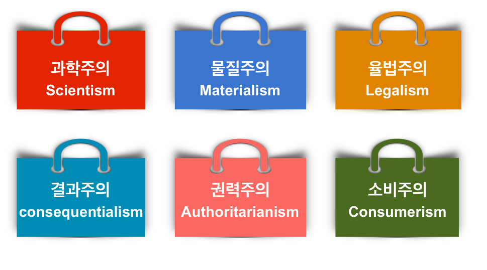
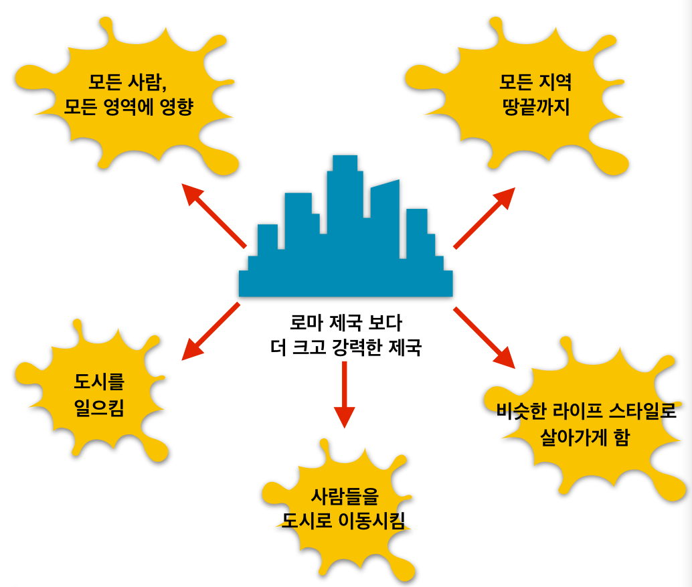

세상속의 삶터
|
|
|
우리의 삶터는 세상의 한가운데 있으며 우리는 그 곳에서
세상을 만납니다. 하지만 우리가 사는 세상은 중립지대가 아닙
니다. 우리가 사는 세상은 이미 깊은 어두움 속에 있으며 우리
는 그 어두움을 우리의 삶터에서 매 순간 직면하게 됩니다.
|
이 어두움의 근원은 인간의 죄이며 (로마서 3:23), 다양한
범죄 행위로 나타나지만 (창세기 4:8) 가장 보편적으로 나타나
는 모습은 세속주의(secularism)입니다 (창세기 11:4).
또 말하되 자, 성읍과 탑을 건설하여 그 탑 꼭대기를 하늘에 닿게 하여
우리 이름을 내고 온 지면에 흩어짐을 면하자 하였더니
- 창세기 11:4, 개역개정
삶의 3가지 형태
우리가 주목하는 것은 보이는 것이 아니요 보이지 않는 것이니
보이는 것은 잠깐이요 보이지 않는 것은 영원함이라
- 고린도후서 4:18, 개역개정
- 세속주의: 보이는 유한한 것을 주목하고 (fixing our eyes on what is seen),
보이는것을 따라 자신을 위해 사는 삶.
- 도피주의: 보이는 것을 보지 않고 기피하며 자신을 위해 사는 삶.
- 신본주의: 보이지 않는 영원한 것을 주목하고 그 관점에서 보이는 것을 다스리며,
하나님 중심으로 사는 삶.
현대사회와 세속주의
현대 사회에서 세속주의는 과거 어느 때 보다 강력하게 모든 사람들의 삶에 깊이 파고
들어와 세상을 지배합니다. 특별히 '비즈니스’ 라는 시장 경제 시스템이 무서운 속도로
온 세상을 통합시켜가며 우리 모두의 일상 속으로 깊이, 그리고 삶의 전 영역 속으로
들어와 삶터를 지배하고 세속주의를 따르게 합니다. 이 세속주의는 우리의 삶터에서
다음과 같은 형태로 나타납니다.

보이는 것으로 자신을 증명하라
비즈니스 제국과 세속주의

- 비즈니스 제국은 일상의 모든 영역을 장악하고 있습니다.
- 비즈니스 제국은 사람을 연결하고, 국가의 경계와 통제를 넘어섭니다.
- 공통의 언어와 가치로, 하나의 문화와 세계관을 갖게 함으로
같은 생활 양식으로 살아가게 합니다
세속주의의 도전
세속주의는 애매하며 겉으로 잘 드러나지 않습니다. 왜냐하면 세속주의와 관련된 대부
분의 행위가 그 자체는 죄가 아니며 오히려 하나님께서 선하게 창조하신 세상에 기초
하고 있기 때문입니다. 그러나 그것에 우리의 시선을 고정 할 때에 세속주의는 우리의
삶을 지배하여 하나님께서 우리를 부르시는 믿음의 삶, 제자의 삶을 뿌리 채 흔들고 위협
하고 변질 시킵니다.
- 신앙과 삶 분리 합니다.
- 신앙을 삶의 변두리로, 주변화 시킵니다.
- 성공의 우상과 신화를 따르게 하여 하나님을 예배할 수 없게 합니다.
- 보이지 않는 것을 바라고 믿는 믿음의 성장을 가로 막습니다.
- 자기 중심적 소비 문화를 확산하여, 공동체에 대한 사랑과 헌신을 파괴합니다.
- 세상과 구별되는 빛과 소금으로서의 정체성을 잃게 하여,
복음 증거의 삶을 살아가지 못하도록 방해 합니다.
당신은 지금 현대 사회에서 여러가지 모습으로 우리 삶터속에 들어와 있는 세속주의와
(과학주의, 성과주의, 물질주의, 권력주의, 율법주의, 소비주의, 성공주의 등) 그 영향력
을 인식하고 있습니까?
해결책: 하나님 나라의 복음
세속주의의 영향력은 너무나 어둡고 강력하여 어떤 노력으로도 이길 수 없어 보입니다.
그러나 빛이 오면 어두움이 사라지는 것과 같이, 세속주의의 어두움은 세상에 오신 참 빛
되신 예수 그리스도께서 비추실 때 사라집니다. 복음은 세속주의를 넉넉히 이기고 삶터
에서 하나님 나라를 구하며 믿음으로 살아가게 하는 능력이 됩니다.
참 빛 곧 세상에 와서 각 사람에게 비추는 빛이 있었나니
- 요한복음 1:9, 개역개정
또한 복음은 우리의 삶터에 이루어질 하나님의 나라를 믿고 소망하며 그 소망 안에서
눈에 보이는 현실을 다스리게 하여 성도들이 세상 속에서도 세속주의를 따르지 않고
온전한 믿음의 삶을 살게 합니다.
그런즉 너희는 먼저 그의 나라와 그의 의를 구하라
그리하면 이 모든 것을 너희에게 더하시리라
- 마태복음 6:33, 개역개정
삶터의 현실: 이미 그러나 아직
싹이 나고 결실할 때에 가라지도 보이거늘 집 주인의 종들이 와서 말하되
주여 밭에 좋은 씨를 뿌리지 아니하였나이까 그런데 가라지가 어디서 생겼나이까
주인이 이르되 원수가 이렇게 하였구나 종들이 말하되
그러면 우리가 가서 이것을 뽑기를 원하시나이까 주인이 이르되 가만 두라
가라지를 뽑다가 곡식까지 뽑을까 염려하노라 둘 다 추수 때까지 함께 자라게 두라
추수 때에 내가 추수꾼들에게 말하기를 가라지는 먼저 거두어 불사르게 단으로 묶고
곡식은 모아 내 곳간에 넣으라 하리라
- 마태복음 13:26-30, 개역개정
삶터에 임하는 하나님 나라
삶터에 하나님의 나라가 임한다는 것은 삶터에서 보다 종교적인 행위들, 예를들어, 예배
의식, 기도모임, 성경공부, 전도, 헌금, 등을 더하거나 대체하는 것을 의미하지 않습니다.
우리가 삶터에 임하는 목적과 행하는 활동 자체가 하나님의 말씀에 기초하게 하여 하나
님의 다스림과 주권이 우리의 삶터 속에서 회복되는 것을 의미합니다. 즉, 하나님께서
다스리시는 거룩한 영적인 영역과 내가 다스리며 조절 하던 일상의 영역이 다른 영역이
아님을 인정하고 성속(聖俗)의 벽을 허무는 것입니다.
예수님께서도 하나님 나라를 비유하실 때, 모두 우리의 일상, 삶터를 비유로 말씀하셨습
니다. 이것은 우리가 얼마든지 우리의 일상 가운데 하나님의 나라, 즉 하나님의 다스림과
주권을 경험할 수 있음을 증명 합니다.

소그룹 나눔
- 세속주의: 우리의 삶터에 깊이 들어와 있는 세속주의를 인식하고 있습니까? 나의
가정 혹은 직장에 가장 큰 영향과 도전을 주는 세속주의적인 생각, 논리와 관행은 무엇입
니까? 우리는 어떻게 개인적으로 그리고 공동체로 우리 삶터에 들어온 세속주의를 분별
하고 극복할 수 있을까요?
-
삶의 변화: 세속주의를 이기는 하나님 나라의 복음을 이해 하셨습니까? 일상의 삶과
신앙 생활을 구분하는 마음의 벽은 무엇입니까? 삶터의 모든 영역이 하나님의 말씀으로
다스리심을 받기 위하여 당신이 변화되어야 할 삶의 목적과 방식은 무엇입니까?